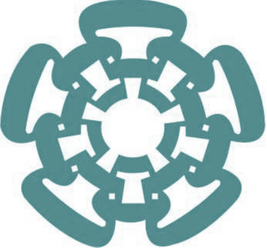
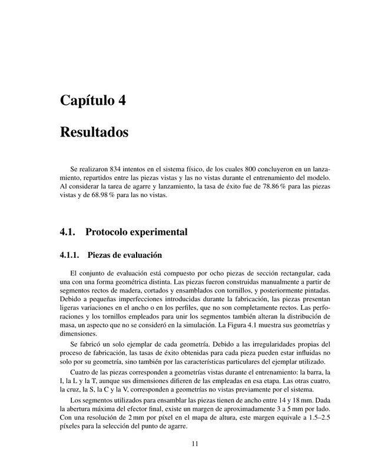

Grasping and Tossing of
Rigid Objects
CINVESTAV, Saltillo Campus · Robotics and Advanced Manufacturing

Work in progress. The thesis and the code are not published yet; the numbers below are the frozen evaluation of August 30, 2026.
Overview
Tossing extends the reach of a manipulator beyond its workspace, but it moves the difficulty into a release that lasts a few milliseconds. We study grasping and tossing of rigid parts with a 7-DoF Sawyer robot: the arm picks a part from a cluttered tray and throws it into one of twelve bins of a grid placed outside its reach. The gripper leaves only a few millimetres of clearance around the part, so a throw begins with a grasp that has to be repeatable, and the commanded release velocity is not the one the arm actually executes. We evaluate the complete task on the real robot over 834 attempts, on the four object families used during training and on four families the policy had not seen within the same domain.
The task
selection
bin
An attempt is scored end to end: a throw that lands in a neighbouring bin is a miss, and a part that is never grasped never reaches the throw.
Real-robot evaluation
| Split | Attempts | Grasp | Toss after grasp | End to end |
|---|---|---|---|---|
| Seen families (bar, L, T, I) | 402 | 99.50 % 98.2–99.9 | 79.25 % 75.0–82.9 | 78.86 % 74.6–82.6 |
| Unseen families (C, S, cross, V) | 432 | 92.59 % 89.7–94.7 | 74.50 % 70.0–78.5 | 68.98 % 64.5–73.2 |
Frozen evaluation of August 30, 2026. Percentages are exact-bin success; Wilson 95 % intervals are recomputed from the counts, never transcribed. Unseen families are geometries held out within the same evaluated domain, not arbitrary objects.
Results chapter

Chapter 4 — Resultados
The results chapter of the thesis as it stands today: experimental protocol, the 834 attempts on the physical system, the grasp maps, the release-speed calibration and the seen/unseen breakdown.
It is posted to show the state of the work, not as a finished document. The rest of the thesis is still being written.
BibTeX
@mastersthesis{gomezcordero2026tossing,
title = {Grasping and tossing of rigid objects},
author = {G{\'o}mez Cordero, Jos{\'e} Fausto},
school = {Centro de Investigaci{\'o}n y de Estudios Avanzados del IPN,
Unidad Saltillo},
year = {2026},
note = {In preparation}
}